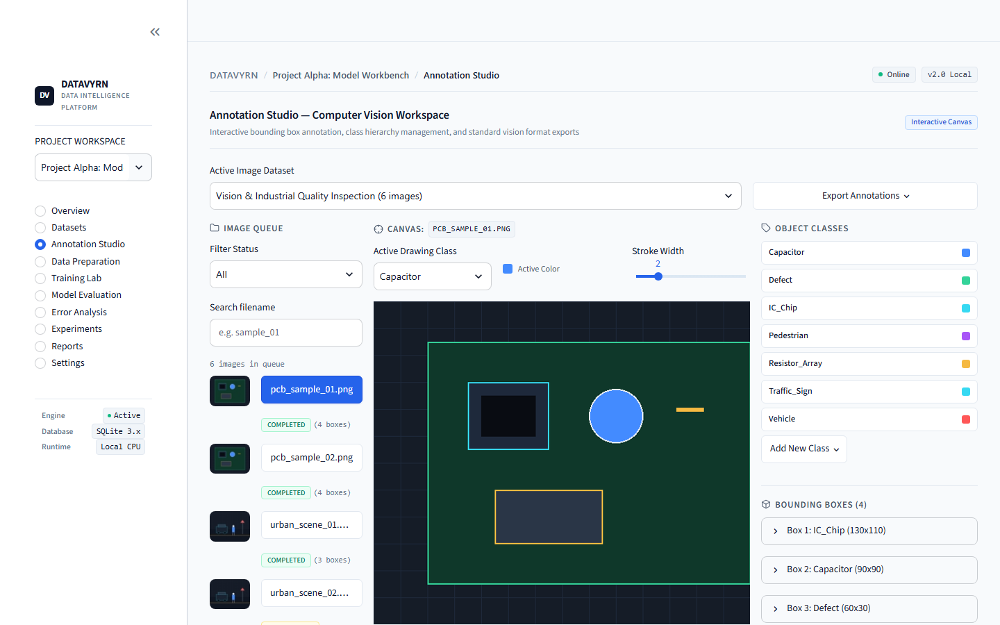

DATAVYRN
AI WORKBENCH.
An end-to-end, air-gapped machine learning and computer vision workstation unifying dataset quality profiling, bounding-box image annotation, leakage-free train/test preprocessing, model compilation, root-cause error forensics, and automated PDF audit reporting.

UNIFYING FRAGMENTED ML PIPELINES INTO ONE WORKBENCH.
Real ML teams juggle separate tools for EDA notebooks, image labeling, preprocessing scripts, and experiment logs. DATAVYRN consolidates every stage over a single SQLite + SQLAlchemy registry.
Operations Overview
Live workspace metrics tracking datasets, annotated frames, task distribution donuts, QA agreement trends, and experiment leaderboards.
CV Bounding-Box Studio
Interactive canvas annotation workflow with class tags, QA review statuses, and standards-compliant COCO JSON, YOLO TXT, and Pascal VOC XML export.
Dataset Profiler (0–100)
Evaluates CSV, XLSX, JSON, and image batches for missingness, skewness, corruption detection, duplicate rows, and composite health score.
Zero-Leakage Preprocessing
Fits scalers, imputers, and encoders strictly on training folds before transforming validation splits to eliminate leakage.
Model Compilation & Eval
Trains Scikit-Learn Classification, Regression, and K-Means clustering jobs with live confusion matrices, ROC curves, and leaderboards.
Error Forensics & PDF Audit
Drills directly into misclassified samples for one-click relabeling and generates formal ReportLab PDF engineering audit dossiers.
HOW IT WORKS.
Every annotation, split artifact, and trained Scikit-Learn model flows through a shared SQLAlchemy metadata ledger.
Ingest & Profile
CSV/XLSX/Images validated with 0–100 health score.
CV Annotate
BBox canvas labeling + COCO/YOLO/VOC exporter.
Leak-Free Prep
Train-only fit pipelines & versioned split state.
Train & Compare
Scikit-Learn models logged to leaderboard.
Forensics & PDF
Misclassification relabeling + ReportLab audit.
APPLICATION SCREENSHOTS.
Live screens captured from the running application. Click any image to view full size, or follow setup instructions in the GitHub repository.
WORKBENCH CAPABILITIES & VERIFIED SPECS.
Key modules, rules, safety checks, and automated test results documented in the repository.
| Subsystem | Technical Implementation | Verified Capability |
|---|---|---|
| CV Annotation Studio | Bounding-box tagging + QA review workflow | COCO JSON, YOLO TXT, Pascal VOC XML |
| Dataset Intelligence | Tabular stats (mean/std/skew) + image checks | Transparent 0–100 Dataset Quality Score |
| Preprocessing Guard | Strict fit-on-train / transform-on-test isolation | Zero validation leakage across runs |
| Reporting & Tests | ReportLab PDF dossier + SQLite Model Registry | 21 / 21 Pytest tests passed |
CORE TECHNOLOGIES.
Frameworks, databases, visualization tools, and testing libraries used in DATAVYRN.
FUTURE ENHANCEMENTS.
Upcoming improvements planned for DATAVYRN.
EXPLORE SOURCE & DOCS.
View the complete codebase, sample datasets, quick-launch scripts, and automated test suites on GitHub.